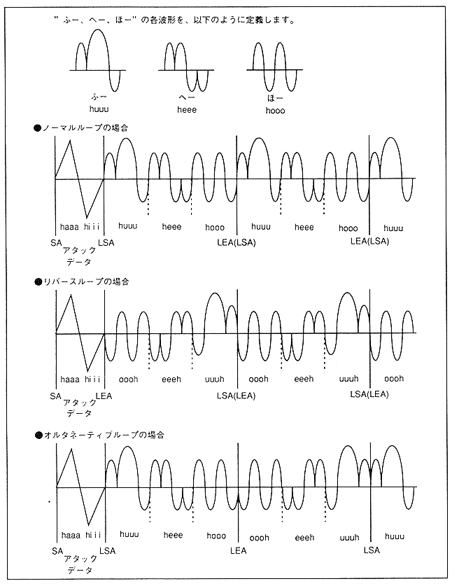

Furthermore, the waveforms of the normal loop, reverse loop, and alternative loop can be represented as shown in Figure 4.11. Note that the uuuh, eeeh, and oooh waveforms are inverted from the huuu, heee, and hooo waveforms.
Figure 4.11 Loop waveform
